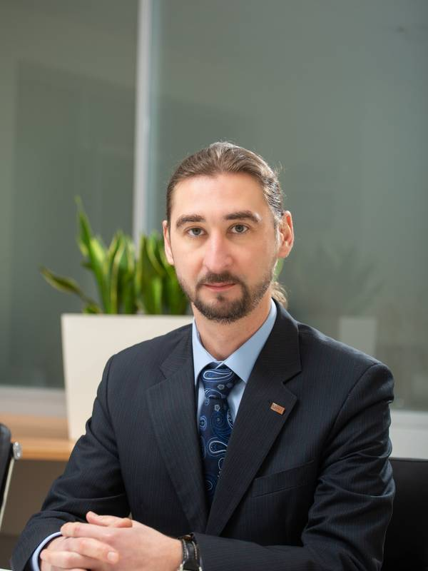

Kyiv, Ukraine · valuation & advisory · since 2001
Partner, Valuation & Advisory, RSM Ukraine · MRICS · RICS Registered Valuer · REV (TEGOVA)
I value businesses and assets in Ukraine and quantify war-related losses for investors, lenders, auditors, courts and arbitral tribunals. AI agents help me gather and check data and research material; the judgement and the signature are mine.
I am also an engineer by training (non-destructive testing, Kyiv Polytechnic Institute, 2001), a lecturer at the International Institute of Business (IIB) and the author of Value Notes.

years in the profession
certified valuer since 2001
courses and modules for valuers
own course materials · IIB, since 2025
jurisdictions of foreign investors and lenders
reports since 2011 · including for the EBRD and IFC
About
I am a valuer based in Kyiv and have been in the profession since 2001: certified in Ukraine that year, a Chartered Valuation Surveyor (MRICS) since 2010, a Recognised European Valuer (REV) since 2019 and an RICS Registered Valuer since 2025. Since 2026 I have led the Valuation & Advisory practice at RSM Ukraine; valuation engagements are contracted through the firm.
My practice has evolved with the market: collateral valuation for international banks in 2011–2013, reporting under RICS standards for foreign investors from 2015, IFRS revaluations and impairment testing for utilities and industrial groups in 2016–2019, business valuation and financial modelling in 2019–2021 and, since 2022, the assessment of war damage and lost profits, audit support and court-appointed valuation.
For auditors, I review valuations prepared by others in line with ISA 540 (Revised) and ISA 620. This site sets out what I have done, what I teach and what I write; it does not reproduce my Value Notes posts.
Credentials
EducationEngineering degree, non-destructive testing instruments and systems, Kyiv Polytechnic Institute (2001) · Degree in economics (finance and credit), Moscow State University of Economics, Statistics and Informatics (2008)
LanguagesUkrainian · English
AffiliationsUkrainian Society of Appraisers (UTO) · Ukrainian Association of Professional Valuers (UAPV) · Pan-Ukrainian Association of Valuation Specialists (PUAVS) · FIABCI Ukraine, associate
AI in valuation practice
Since 2026 I have worked with several AI agents that I direct: one gathers material, another checks it and a third looks for anything that would refute the result. House rule: every external figure or fact is confirmed by at least two independent sources, every reference to a clause of a standard is checked against the source page and every deliverable carries a “verified X of Y” count.
This does not replace professional judgement; it protects it. The machine reads everything in full; I remain accountable for the conclusion. What already works:
I handle confidential client material under the firm’s policies
A standards layer for agents
IVS 2025, EVS 2025, the RICS Red Book 2025 and the Ukrainian national valuation standards are held as a text layer with a page map, so that every clause cited can be checked against the source page.
Adversarial cross-check
Before a report, syllabus or note goes to its recipient, a separate agent gets one task: to refute every claim. Incoming material goes through the same check.
Document control
Automated checks of Word, Excel and PowerPoint files before delivery, scripted reconciliation of registers, SHA-256 hashes in every delivery manifest and visual regression testing of HTML pages.
Experience base
57 anonymised methodology lessons from my own practice, 2018–2026, with no client data; agents consult them before a new assignment.
The limits of automation
A paper at the UTO conference (September 2026) on what IVS and EVS require of a valuer who uses AI. See Writing.
Notes
Can a valuer use AI under IVS and EVS?
IVS, EVS, the Red Book and the RICS AI standard: the line is professional judgement, and what to disclose in the report.
What does an auditor expect from a review of a valuation report?
ISA 500, 540 (Revised) and 620 alongside a review under Ukraine’s NVS 1: what to agree before work starts.
Writing & speaking
Professional Judgement as the Limit of Valuation Automation: IVS and EVS Requirements for the Use of Artificial Intelligence
Paper at the 36th UTO research and practice conference “Professional Valuation Activity: Today’s Challenges” (Odesa), with the abstract published in the proceedings.
Source: UTO conference programme and proceedings, September 2026
The Valuer as Expert Witness: What the 5th Global Edition of the RICS Standard Changes
Analytical note published by the International Institute of Business (IIB).
Source: IIB, School of National Professional Qualifications, August 2026
Business Valuation: From Formal Reporting to Strategic Management
Published on the Nexia DK website, in Ukrainian.
Valuation Is Not About Numbers — It’s About How We Think About Value
Article on LinkedIn.
Digital Footprints in the Valuation Profession: Who’s Influencing Online?
Article on LinkedIn.
Why the RICS Red Book Matters to Commercial Property Investors
Published on the Nexia DK website.
The Challenge of Valuing Lost Profits and Business Losses from Armed Aggression
Nexia DK: international practice in quantifying war-related business losses.
Practical Issues in Valuing Damage Caused by Russian Aggression
Talk, with N. Dramaretska, at the online seminar “Current Issues in Valuation”, 15 December 2023.
Valuation of Real Estate Under Conditions of Significant Uncertainty
Published by the European Business Association.
The Profit-Split Method in Valuing Intangible Assets and Intellectual Property (Based on Markables Research)
Long-form post on Facebook, in Ukrainian.
Value and Transaction Price: Is There a Difference?
Long-form post on Facebook for managers and owners, in Ukrainian; a short version appeared in Nexia DK’s “Partner’s tips” series (Instagram, August 2021).
Independent Business Review: An Efficient Tool for Financial Restructuring
Published by the European Business Association.
Business Valuation as a Basis for Management Decisions; The Dependence of “Independent” Collateral Valuation
Published by the Kyiv branch of the Ukrainian Society of Appraisers and reprinted by BGT consulting; the first was co-authored with Andrii Shulha. The site that reprinted them is no longer online.
The Concept of Enterprise Value Management and the Role of Business Valuation in It
Article on the Solomon-Group website, written while I headed its valuation department. The site is no longer online.
Value Notes
My Telegram channel on international valuation practice, IFRS, audit and standards: short notes, each with its source. @valuenotes_ua
Market value of the business of one of Ukraine’s largest food producers
Nexia DK and the European Business Association: I led the valuation team; the report, in English and Ukrainian, was prepared under international standards for a transaction by the company’s EU owners. Includes my comment.
Valuation of intellectual property rights for tax purposes in Singapore
European Business Association: a project I led, carried out in line with guidance issued by the Inland Revenue Authority of Singapore (IRAS). Includes my comment.
Cases
| Type | Assignment | Intended user |
|---|---|---|
| War damage | Pharmacy chain in a frontline region: damaged premises and inventory | Compensation mechanisms |
| War damage | Resort in temporarily occupied territory, valued without physical inspection and with expanded disclosure of material valuation uncertainty | Owner, compensation mechanisms |
| War damage | Destroyed retail outlet of a national chain, including inventory | Owner, compensation mechanisms |
| Court-appointed | Quantification of damages under a commercial court order | Commercial court |
| Business | Grain terminal in Pivdennyi Port, a joint venture between a Ukrainian operator and a global agricultural trader: financial model and cost of capital | Management, investor |
| Business | Container terminal in Pivdennyi Port, for management decisions and the entry of a global strategic investor | Management, investor |
| Business & assets | Land, port equipment and the operating business of a global stevedoring group in the Port of Odesa | Management |
| Financial model | One of the largest private specialised medical providers: five-year look-back, key indicators, risks and recommendations to the owner | Owner, management |
| Financial model | Investment project for an open-air theme park: pre-feasibility calculations, SWOT analysis, investment case, discounted payback period | Sponsor, investors |
| Business | Yeast and compound-feed producers, to secure EBRD financing | EBRD |
| IFRS | Equity stake in a hotel-chain group for a Cypriot company’s IFRS financial statements; audited by a Big Four firm in Cyprus | Auditor |
| IFRS | Equity stakes in a winery (Moldova) owned by a Cypriot company | Auditor |
| IBR | Restructuring of a brewery’s bank debt: Independent Business Review | Lending banks |
| Property | Shopping and entertainment centres across Ukraine; property in Kyiv and Lviv for a Dutch client’s transaction | Owners, buyer |
| Financial instruments | Depositary receipts of a BVI company issued by a Dutch fund in exchange for 100% of a Ukrainian company | Members (for tax purposes) |
Client names are withheld; parties are described by role and country. The EBRD and IFC are named because they are public institutions. Assignments before 2026 were carried out at my previous firm (see Timeline).
Intellectual property
The 2023 report for the Inland Revenue Authority of Singapore (IRAS, Section 19B) was, to my knowledge, the first of its kind in Ukraine. For brands I use international comparables databases such as Markables: royalty rates, profit splits and useful lives drawn from published purchase price allocations (PPAs) and trademark valuations.
| Year | What was valued | Intended user |
|---|---|---|
| 2024 | Flagship brand of an international pet-food group (Ukraine, Lithuania, Cyprus): two income-approach methods, benchmarked against eight competitor brands | Group owners |
| 2023 | Trademarks and patents under the IRAS e-Tax Guide for Section 19B of Singapore’s Income Tax Act | Inland Revenue Authority of Singapore (IRAS), transaction parties |
| 2021 | A group of pharmaceutical trademarks owned by a Cypriot company, for a sale and purchase; report in English under IVS, using the relief-from-royalty and profit-split methods | Transaction parties |
| 2018 | Trademark of an international visa-services group; report in English | Auditor (IFRS) |
| 2012 | Trademarks of a brewing group, for a transaction with an international brewer | Transaction parties |
| 2011–2013 | Trademarks of food and beverage producers and of an industrial group, including a beer brand valued twice in 2013 | Owners, banks, auditors |
| — | Proprietary rights of a Cypriot company to data-processing software, for management decisions | Management |
Define the rights before building the model
Which rights exist and where they are registered; what is expressly excluded; how the business actually makes its money: through the mark or through something else. Without these three answers, the royalty rate quietly absorbs goodwill.
A “market” royalty rate is often implied
A benchmark from a royalty database may be derived from a valuation rather than taken from an actual licence agreement. For each benchmark I check the payment base, exclusivity, territory and term.
Owner and licensee benefit differently
The IP owner and the operating licensee receive different benefit streams; assumptions for the enterprise as a whole cannot be transferred mechanically to a single asset.
Client and brand names are withheld. A short note on the limits of IP valuation: my LinkedIn post “‘Value my IP’ is not a scope” (May 2026).
Teaching
Lecturer, International Institute of Business (IIB), on CPD courses for practising valuers. Topics: machinery and equipment; the cost approach to real estate (part of the general programme for specialisation 1, co-developed by me and published by the State Property Fund of Ukraine); AI and automated valuation models (AVMs); residential property; damage from armed aggression; general issues of valuation.
Co-author of the basic qualification programmes for valuers in all three specialisations (real estate, movable property, business) and author of the memorandum on harmonising them for the working group. What I proposed:
Author of, and lecturer on, the eight-hour IIB course on valuing actual loss and lost profits from armed aggression under the national methodology, international standards and international damages practice; first delivered on 11 September 2026.
Lecturer on the mandatory CPD programme “General Issues of Valuation” at IIB since its first session on 9 May 2026.
Author and co-author of CPD programmes submitted to the State Property Fund of Ukraine: machinery and equipment, the cost approach to real estate, residential property, damage assessment. In the damage programme I proposed treating actual loss and lost profits together, in the context of international standards and the practice of tribunals and arbitration.
Completed training for valuation lecturers on the basics of the European Valuation Standards, a seminar run by the State Property Fund of Ukraine and the World Bank; certificate from the State Property Fund of Ukraine.
One of the lecturers on the IIB programme “Valuation of Property for Collateral Purposes”.
Sessions on business valuation in an IIB corporate programme for a state-owned bank.
Internal seminar on valuation and valuation reports for audit teams.
Lecture “Business Valuation under Economic Uncertainty” for the finance team of a bakery group.
Timeline
Partner, Valuation & Advisory
RSM Ukraine
Lecturer, IIB · RICS Registered Valuer
International Institute of Business; RICS Valuer Registration
War-damage valuation
Working group of lawyers and valuers on compensation through international arbitration; damage assessments for about 40 companies since then
Partner and Valuation & Advisory Leader; Director of the group’s valuation company
Nexia DK, Kyiv and Lviv · REV (TEGOVA), 2019
MRICS
Chartered Valuation Surveyor, Royal Institution of Chartered Surveyors
Economist, Finance and Credit
Moscow State University of Economics, Statistics and Informatics
Partner, Valuation Services
Nexia DK Auditors & Consultants
Head of Valuation Services
Solomon-Group, Kyiv
Engineer · certified valuer
Kyiv Polytechnic Institute, non-destructive testing instruments and systems; valuer qualification, April 2001
Valuer
Rielter-Ukraine, Kyiv
Contact
+380 63 720 72 72
MessagingWhatsApp · Telegram @yaroslavnagul
Valuation enquiries
y.nagul@rsm.ua
Courses, publications, talks
yaroslavnagul@gmail.com
LinkedInlinkedin.com/in/yaroslav-nagul-mrics-rev
RSM Ukrainersm.global/ukraine (partner profile)
CityKyiv, Ukraine
Valuation engagements are contracted through RSM Ukraine, where I lead the Valuation & Advisory practice. An initial conversation is free and without obligation; it is usually enough to establish whether you need a valuer at all and, if so, whether I am the right one.
The deliverable is a valuation report under the International Valuation Standards (IVS), the RICS Red Book or Ukrainian national valuation standards, depending on who will rely on it.